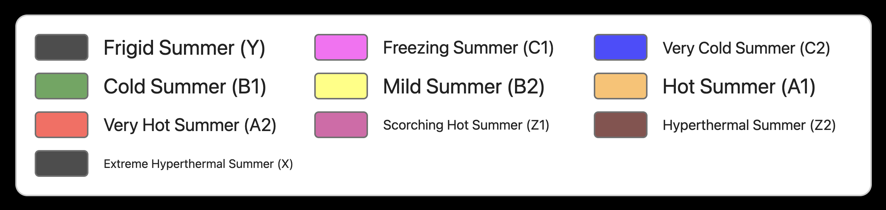

Global Winter Maps

Global distribution of winter categories — 1981 - 2010 normals

Global distribution of winter categories — 2011 - 2040 High Emission normals

Global distribution of winter categories — 2041 - 2070 High Emission normals

Global distribution of winter categories — 2071 - 2100 High Emission normals

United States distribution of winter categories — 1981 - 2010 normals

United States distribution of winter categories — 2011 - 2040 High Emission normals

United States distribution of winter categories — 2041 - 2070 High Emission normals

United States distribution of winter categories — 2071 - 2100 High Emission normals

Global Aridity Maps

Global distribution of aridity categories — 1981 - 2010 normals

Global distribution of aridity categories — 2011 - 2040 High Emission normals

Global distribution of aridity categories — 2041 - 2070 High Emission normals

Global distribution of aridity categories — 2071 - 2100 High Emission normals

United States distribution of aridity categories — 1981 - 2010 normals

United States distribution of aridity categories — 2011 - 2040 High Emission normals

United States distribution of aridity categories — 2041 - 2070 High Emission normals

United States distribution of aridity categories — 2071 - 2100 High Emission normals

Global Summer Maps

Global distribution of summer categories — 1981 - 2010 normals

Global distribution of summer categories — 2011 - 2040 High Emission normals

Global distribution of summer categories — 2041 - 2070 High Emission normals

Global distribution of summer categories — 2071 - 2100 High Emission normals

United States distribution of summer categories — 1981 - 2010 normals

United States distribution of summer categories — 2011 - 2040 High Emission normals

United States distribution of summer categories — 2041 - 2070 High Emission normals

United States distribution of summer categories — 2071 - 2100 High Emission normals